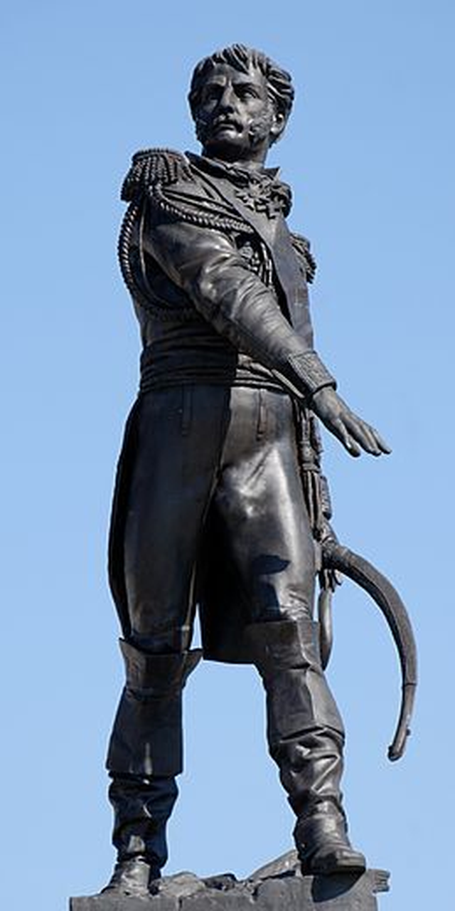
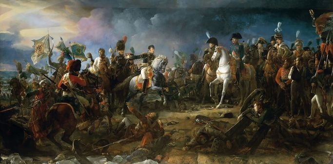
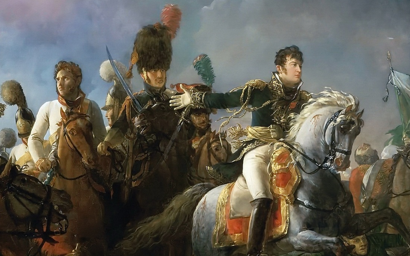
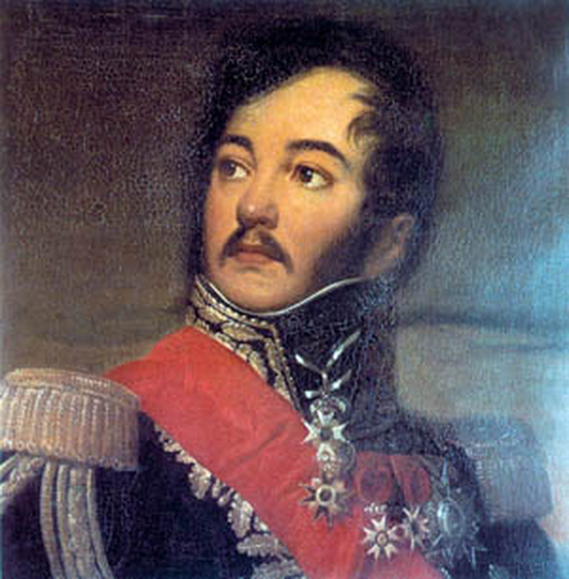

아스페른-에슬링 10편 - 하드캐리
게시: 2017-04-09T18:08:21+09:00
위기에 빠진 프랑스군을 위기에서 건져낸 것은 전혀 의외의 인물로서, 그는 투박한 독일 사투리가 들어간 프랑스어를 쓰는 알사스(Alsace) 출신이었고, 그가 그 위기의 순간에서 프랑스군을 하드캐리할 수 있었던 것은 그가 나폴레옹의 명령을 의도적으로 거역한 덕분이었습니다.
장 랍(Jean Rapp)은 알사스 지방 콜마르(Colmar) 시의 시청 수위의 아들이었습니다. 그의 아버지는 카톨릭의 나라 프랑스에서는 소수라고 할 수 있는 독실한 프로테스탄트로서, 그의 아들이 장차 제대로 교육을 받고 목사가 되기를 바랐습니다. 그러나 장 랍은 용기와 열정으로 가득찬 전형적인 군인 체질이었던지라, 아버지의 바람과는 달리 17살이 되자 프랑스 기병대에 사병으로 자원 입대해버렸습니다. 그의 군대 생활은 그야말로 피투성이었습니다. 입대한지 5년 만인 1793년 처음으로 검상과 총상을 입은 이후 군 생활 내내 25번의 크고 작은 부상을 입었습니다.

(랍의 고향인 콜마르 시에 세워진 그의 동상입니다. 여기에는 'Ma parole est sacrée' 라는 문구가 새겨져 있는데, 이는 '나의 약속은 신성한 것이다' 라는 뜻으로서, 그의 강직한 성품을 잘 나타내는 것입니다.)
그는 오로지 자신의 힘과 용기를 통해 사병에서 부사관으로, 부사관에서 장교로 승진을 거듭했습니다. 물론 이 모든 것은 프랑스 대혁명과 그로 인해 터진 전쟁 덕분이었지요. 그러던 그에게 출세길을 열어준 것은 바로 드제(Louis Desaix) 장군이었습니다. 독일 전선에서 드제의 눈에 띈 그는 드제의 참모진으로 발탁되었을 뿐만 아니라, 대위로 승진까지 되었습니다. 그는 당연히 이집트까지 드제를 따라 갔었고, 그런 와중에도 끊임없이 전투에서 부상을 입었으며, 여기서 마멜룩 부대와 인연을 맺게 됩니다. 나폴레옹이 먼저 귀국한 이후 드제와 함께 뒤늦게 이집트에서 프랑스로 귀국한 그는, 드제와 함께 마렝고 전투에도 참전했습니다. 여기서 그는 자신의 동아줄인 드제 장군의 전사라는 불운을 겪게 됩니다.
그러나 랍의 운은 거기서 끝나지 않았습니다. 나폴레옹은 마렝고에서의 드제를 은혜를 잊지 않았고, 드제와 관련된 인물들을 대거 자신의 심복으로 받아들였습니다. 랍도 그렇게 나폴레옹의 참모진이 될 수 있었고, 뿐만 아니라 나폴레옹의 부인인 조세핀의 눈에도 들게 되어 나폴레옹의 궁정에서 더욱 입지를 굳힐 수 있었습니다. 그는 이집트에서의 인연을 살려 프랑스군에 마멜룩 기병대를 창설하는 일을 주도했었는데, 1805년의 아우스테를리츠 전투에서 그는 나폴레옹이 내려다보는 가운데 그 마멜룩 기병대를 이끌고 러시아군과 싸워 승리하는 공을 세우기도 했었습니다. 그는 부러진 검과 (또 부상을 입어) 피를 철철 흘리는 머리를 한 채 나폴레옹에게 포로로 잡은 볼콘스키(Repnin-Volkonsky) 대공을 데리고 가 승리를 보고했는데, 그 장면은 제라르(Gerard)의 아우스테를리츠 전쟁화를 통해 역사의 한 장면으로 영원히 남는 영광을 누리기도 했습니다.

(랍에게 돈이 충분했다면 아마 이 그림을 구매하여 대대손손 가보로 물려주었을 것입니다.)

(왼쪽의 흰 제복을 입은 사람이 볼콘스키 대공이고, 오른쪽의 모자를 쓰지 않은 인물이 랍입니다. 랍의 오른손목에 끈으로 묶어놓은 군도가 부러진 것을 보실 수 있습니다.)
따라서, 5월 22일 아스페른-에슬링 사이의 끊어진 부교 앞에서 위기에 처한 나폴레옹이, 남은 예비 병력 전부인 신참 근위대 2개 대대를 이끌고 갈 지휘관으로 랍을 고른 것은 전혀 이상한 일이 아니었습니다. 단, 이때 나폴레옹이 내린 명령은 간단 명료했습니다. 그는 무통 장군이 지휘하는 근위대 5개 대대가 오스트리아군과의 접전에서 벗어날 수 있도록 지원하여, 그 5개 대대를 무사히 부교 쪽으로 데리고 오라는 것이었습니다. 그러나 평생을 기병 장교로 살며 이미 몸에 수많은 생선가시 모양의 흉터를 훈장처럼 붙이고 다니던 랍을 그런 소극적 구출 작전을 수행할 지휘관으로 고른 것은 나폴레옹의 실수였습니다.
랍은 무통 장군이 로젠베르크의 오스트리아군과 치열한 접전을 벌이던 에슬링 마을에 도착할 때, 이미 무통 장군의 근위대를 구출해 무사히 후퇴한다는 생각은 전혀 하고 있지 않았습니다. 그는 나폴레옹의 남자답지 못한 구출 및 후퇴 명령을 정면으로 위배하여 도착하자마자 휘하 병력을 전개하여 치열한 공격에 나섰습니다. 랍과 무통의 병력은 신참 근위대 7개 대대로서, 프랑스군의 정예 중 정예라고 할 수 있는 부대였습니다. 비록 패배를 눈 앞에 둔 상황이고, 무통 장군이 받은 명령도 부데 사단의 구출이라는 소극적인 것이라서 부대의 사기가 높은 편은 아니었습니다만, 피끓는 랍이 완전히 새로운 분위기로 맹렬한 공격을 지시하자 상황이 확 바뀌었습니다. 근위대는 왜 자신들이 프랑스군의 꽃이라고 불리는지 당당히 증명을 해보였습니다. 그들은 로젠베르크의 오스트리아군을 마구 밀어붙였고, 그 기세에 오스트리아군은 맥없이 무너져 내렸습니다. 하도 어이없이 무너지는 바람에 공격하던 랍이 당황할 정도였지요.

(랍의 초상화입니다. 그는 의리의 사내답게 나폴레옹의 이혼 시에도 자신과 친했던 조세핀 편을 들었고, 급기야 핑계를 대고 나폴레옹과 마리-루이즈의 결혼식에도 나타나지 않았습니다. 그로 인해 나폴레옹의 신임을 잃게 되지요. 그럼에도 그는 러시아 원정에서 나폴레옹의 목숨을 구했고 백일천하 때에도 나폴레옹 편에 서는 등 나폴레옹에 대한 충성심을 잃지 않았습니다.)
물론 근위대는 정예부대였고 또 랍은 용맹무쌍한 지휘관이긴 했습니다. 그러나 이렇게까지 오스트리아군을 쉽게 꺾을 능력이 있는 것은 아니었지요. 알고보면 랍이 이끈 근위대 공격은 그야말로 '나귀의 등을 부러뜨린 마지막 지푸라기' 같은 것이었습니다. 오스트리아군은 그 전날 아침부터 고된 행군과 치열한 전투로 이미 지칠대로 지친 상태였습니다. 프랑스군도 궁지에 몰린 상태였지만, 도무지 붕괴되지 않는 프랑스군의 저항 때문에 미치고 환장할 노릇이었던 것은 오스트리아군도 마찬가지였습니다. 이런 상태에서 몰려온 무통 장군의 근위대에 대해 그나마 잘 싸워준 것이 대단한 일이었습니다. 그런데 엎친데 덮친다고 무통의 부대와 싸우는 것도 죽을 맛이었는데 전혀 새로운 사기를 뽐내는 근위대가 추가로 덤벼들자 마침내 오스트리아군도 우르르 무너진 것이었지요.
정말 승리는 모든 문제들을 해결해준다더니, 정말 그랬습니다. 이렇게 뜻 밖에 에슬링을 재탈환하게 되자, 중앙의 란을 압박하던 오스트리아군도 주춤거릴 수 밖에 없었던 것입니다. 좌우의 아스페른과 에슬링이 프랑스군 손에 있는 이상, 중앙으로 무작정 밀고 들어가면 측면이 프랑스군에게 노출되어 큰 곤경에 빠질 수 있었으니까요. 게다가, 중앙이나 아스페른에서나, 오스트리아군도 지치고 힘든 것은 마찬가지였습니다. 카알 대공도 이 사실을 잘 알고 있었기 때문에, 그도 보병을 물리고 포병을 앞세우는 것으로 방향을 바꿨습니다.
이로써 프랑스군은 한숨 돌릴 수 있게 되었습니다. 비록 쉴사이 없이 날아드는 오스트리아군의 크고 작은 대포알에 프랑스군이 두세명씩 피떡이 되어 날아가버리긴 했지만, 이들은 대오를 유지한 채 로바우 섬으로 이어지는 부교의 수리를 기다릴 수 있게 되었습니다. 그러나 이 와중에 나폴레옹은 잃어서는 안될 것을 잃게 됩니다.
Source : The Emperor's Friend: Marshal Jean Lannes By Margaret S. Chrisawn
Three Napoleonic Battles By Harold T. Parker
The Life of Napoleon Bonaparte, by William Milligan Sloane
https://en.wikipedia.org/wiki/Battle_of_Aspern-Essling
http://www.historyofwar.org/articles/battles_aspern_essling.html
https://www.napoleon.org/en/history-of-the-two-empires/articles/the-battle-of-aspernessling/
http://obscurebattles.blogspot.kr/2016/05/aspern-essling-1809.html
https://en.wikipedia.org/wiki/Jean_Rapp
http://www.historyofwar.org/articles/people_rapp.html